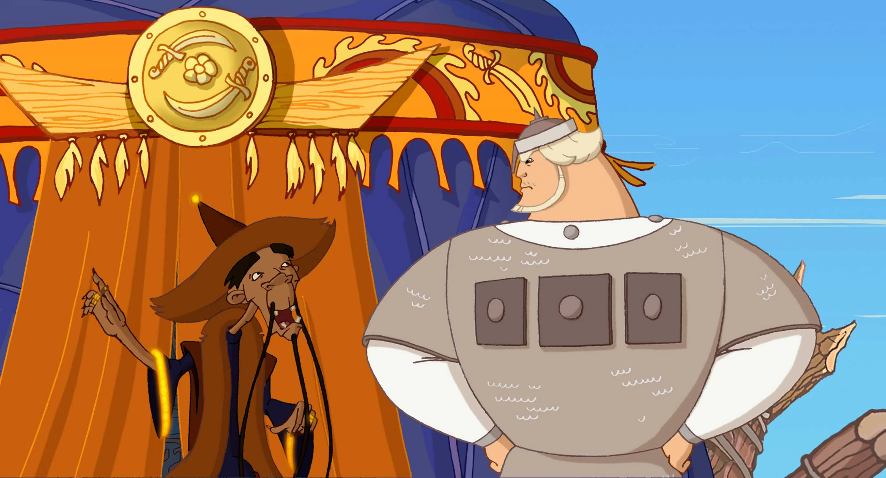
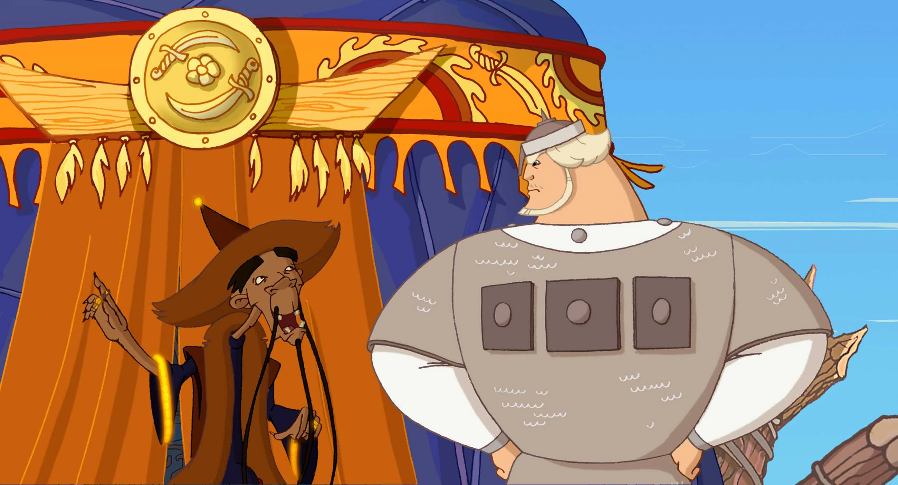

Славится земля русская богатырями богатырскими да разбойниками разбойничьими... А сверху всего князь княжеский сидит, за всем следит и порядок наводит, если нужно. Да только не всегда выходит у князя так, как нужно - правильно. Вот и сейчас — с богатырём поругался да от Соловья Разбойника урон потерпел немалый: увёл бандит окаянный казну государственную прямо из-под носа!
Что делать князю? А ничего особенного — на то он и князь, чтоб из любой ситуации выход найти! Вот и отправились князь с Ильёй на поиски похищенного, а за ними вслед увязалась корреспондентка летописи «Новая береста». А дорога непростая выдалась, до самого Царьграда довела, где встретил их Император Византийский, да только незадача вышла — повздорили наши герои с императором этим, и заключил он против Князя Киевского и Земель русских союз с Соловьем Разбойником...
Когда подступила к Ростову вражеская орда во главе с Тугариным Змеем, Алеша Попович не сумел уберечь жителей от выплаты дани. Теперь богатырь должен восстановить доброе имя, вернуть золото и прогнать неприятеля с земли русской. Он отправляется в путешествие, а помогут ему в этом дядька Тихон, девушка Любава, ее бабушка и говорящий конь Юлий.
Пока храбрый воин Добрыня Никитич собирал с тугар дань, в Киеве похитили любимую племянницу князя - Забаву Путятичну. Вопреки воле князя, Добрыня с женихом Забавы Елисеем отправляется на ее поиски. В пути их ждет много приключений...
 
